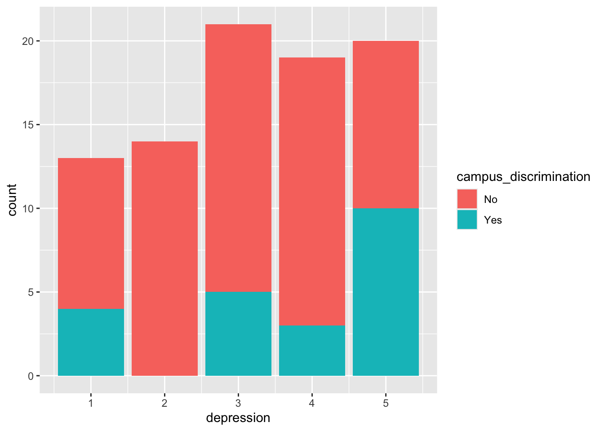
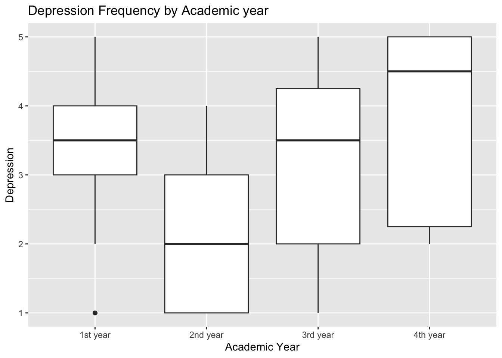
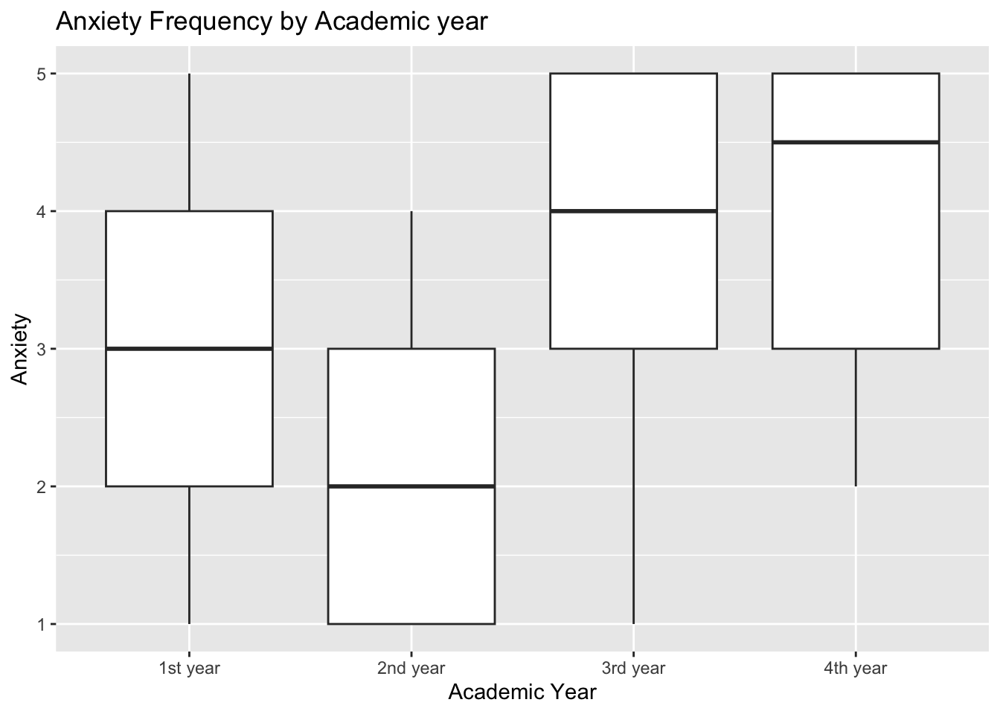
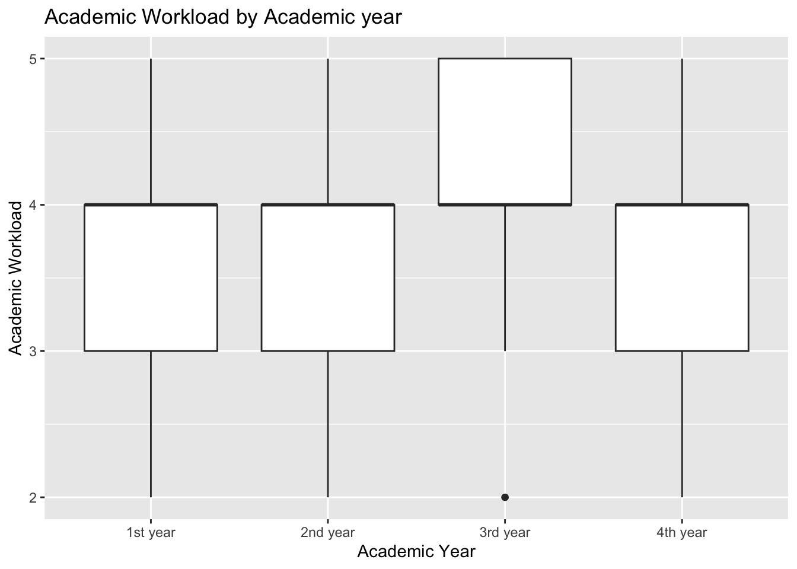
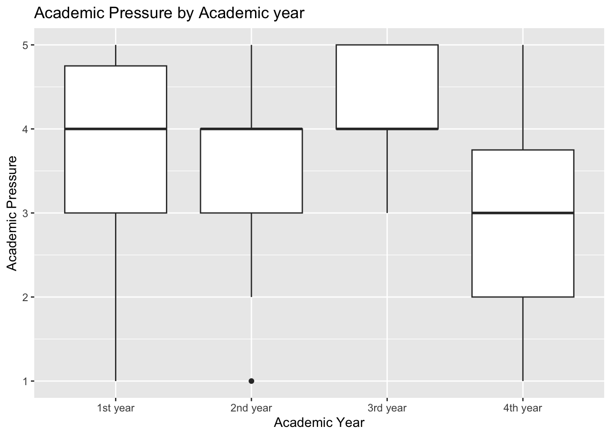
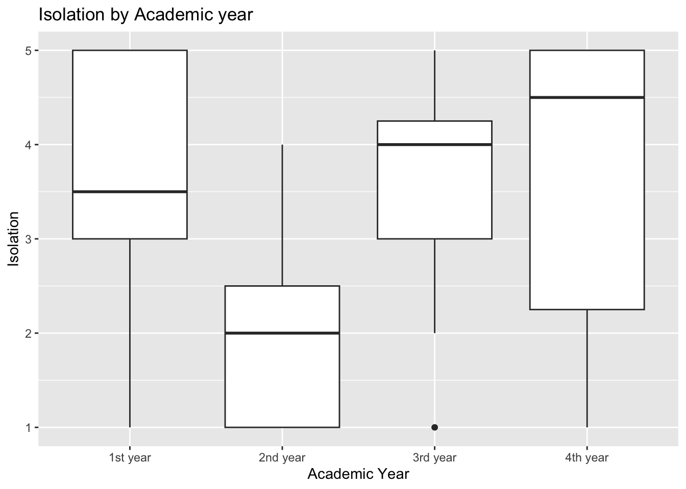
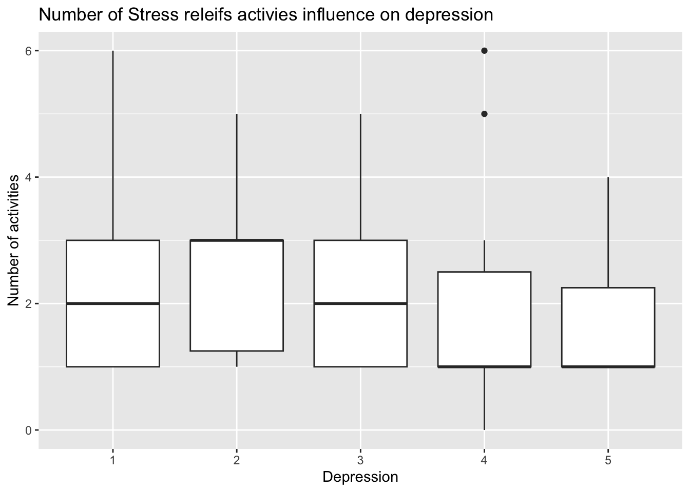
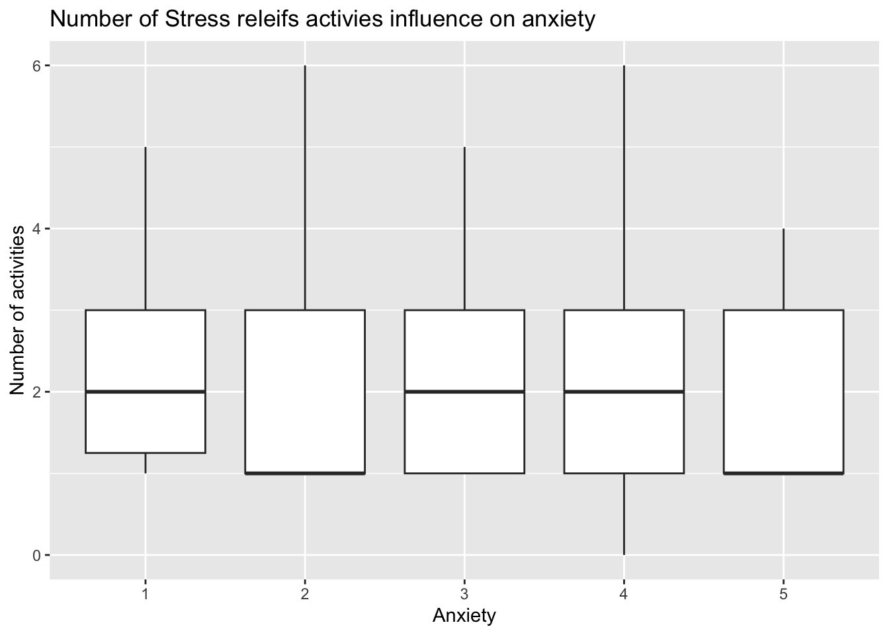
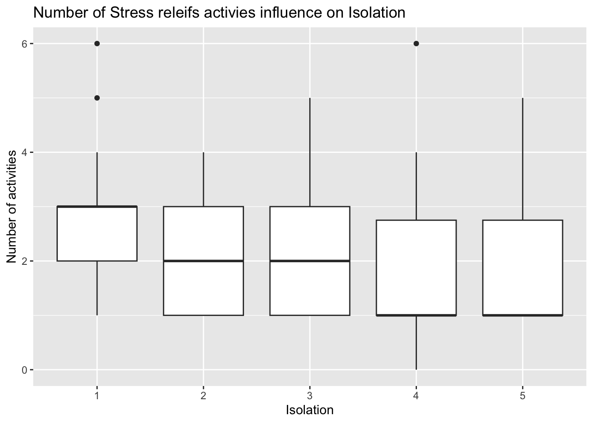

Tori Duckworth
Your exploratory data analysis of the team datasets go here.
Averages
Overall
Code
# A tibble: 1 × 9
`mean(depression)` `mean(anxiety)` `mean(isolation)` `mean(academic_workload)`
<dbl> <dbl> <dbl> <dbl>
1 3.22 3.22 3.24 3.89
# ℹ 5 more variables: `mean(academic_pressure)` <dbl>,
# `mean(study_satisfaction)` <dbl>, `mean(future_insecurity)` <dbl>,
# `mean(social_relationships)` <dbl>, `mean(financial_concerns)` <dbl>Through this we find that the average depression and anxiety are above for 3.2, and mean isolation is around the same. Academic workload is perceived as high on average.
Gender
Code
# A tibble: 2 × 4
gender `mean(depression)` `mean(anxiety)` `mean(isolation)`
<chr> <dbl> <dbl> <dbl>
1 Female 3.58 3.54 3.42
2 Male 3.08 3.10 3.17# A tibble: 2 × 2
# Groups: gender [2]
gender n
<chr> <int>
1 Female 24
2 Male 63Looking at the difference in gender we can see that there is small relationship with depression, anxiety and isolation levels. They tend to be higher in Female students in these majors.
Age
Code
# A tibble: 8 × 5
age `mean(depression)` `mean(anxiety)` `mean(isolation)`
<dbl> <dbl> <dbl> <dbl>
1 17 4.33 4.33 4.67
2 18 3.09 3.18 3.45
3 19 3.05 2.85 2.95
4 20 3.27 3.33 3.23
5 21 2.7 2.8 2.8
6 22 3.22 3.33 3.56
7 23 4 4 3.5
8 26 5 4.5 3.5
# ℹ 1 more variable: `mean(academic_workload)` <dbl>It is important to note there is only 2 students who are 26 and 2 students who are 23 so that is not enough data points for those ages. However looking at the other ages we can see that depression, anxiety and isolation tends to be all over the place, without a clear trend. This will either more looking into or we don’t look at it deeply.
Degree Major
Code
# A tibble: 4 × 5
degree_major `mean(depression)` `mean(anxiety)` `mean(isolation)`
<chr> <dbl> <dbl> <dbl>
1 Computer Science 3.5 3.68 3.47
2 Data Science 2.90 2.68 2.88
3 Information Technology 3.22 3.56 3.56
4 Software Engineering 4.33 4.33 4.67
# ℹ 1 more variable: `mean(academic_workload)` <dbl># A tibble: 4 × 2
# Groups: degree_major [4]
degree_major n
<chr> <int>
1 Computer Science 34
2 Data Science 41
3 Information Technology 9
4 Software Engineering 3Lookint at the different majors they surveyed we can see that academic workload is perceived as relatively high regardless of major, but general trend is Software Engineering being the hardest followed by Computer Science, Data Science and Information Technology. Software Engineering and Computer Science follows the same pattern, however information technology is higher on all mental health levels than data science.
Academic Year
Code
# A tibble: 4 × 5
academic_year `mean(depression)` `mean(anxiety)` `mean(isolation)`
<chr> <dbl> <dbl> <dbl>
1 1st year 3.32 3.12 3.5
2 2nd year 2.27 2.27 1.93
3 3rd year 3.39 3.61 3.46
4 4th year 3.8 3.9 3.7
# ℹ 1 more variable: `mean(academic_workload)` <dbl># A tibble: 4 × 2
# Groups: academic_year [4]
academic_year n
<chr> <int>
1 1st year 34
2 2nd year 15
3 3rd year 28
4 4th year 10Looking by year we can see that seniors have the highest in every category except workload, followed by juniors and then freshman most likley because they are transitioning to school followed by sophmores.
GPA
# A tibble: 6 × 2
# Groups: cgpa [6]
cgpa n
<chr> <int>
1 0.0-0.0 5
2 1.5-2.0 2
3 2.0-2.5 4
4 2.5-3.0 22
5 3.0-3.5 27
6 3.5-4.0 27Code
# A tibble: 6 × 4
cgpa `mean(depression)` `mean(anxiety)` `mean(isolation)`
<chr> <dbl> <dbl> <dbl>
1 0.0-0.0 3 3.2 3.4
2 1.5-2.0 4.5 4 4.5
3 2.0-2.5 2.25 2.75 3.25
4 2.5-3.0 3.14 3.32 3.27
5 3.0-3.5 3.15 2.93 2.85
6 3.5-4.0 3.44 3.44 3.48It is important to note that 5 people have a cumulative GPA of 0.0 - 0.0 and only 2 students have a cumulative GPA of 1.5-2.0 which might skew those data points. Looking at GPA we ca see from 2.0 up there is a rough trend in increasing depression. When looking at anxiety there is roughly the same trend except people with a 3.0-3.5 cgpa tend to have a slightly lower anxiety level, maybe because its a good grade but they are not trying to be perfect? Isolation follows that same trend funnily enough.
Sports Engagement
Code
# A tibble: 4 × 4
sports_engagement `mean(depression)` `mean(anxiety)` `mean(isolation)`
<chr> <dbl> <dbl> <dbl>
1 1-3 times 3.04 3.42 3.08
2 4-6 times 2.09 2.09 2.18
3 7+ times 3.4 3.1 3.2
4 No Sports 3.57 3.43 3.62If you look at sports engagement there is a general trend the more they are engaged the less they feel depression, anxiety, and isolation. However once you get into doing sports 7+ times a week then it shoots up again, most likely because there is less time to spend doing other things.
Campus Discrimination
Code
# A tibble: 2 × 4
campus_discrimination `mean(depression)` `mean(anxiety)` `mean(isolation)`
<chr> <dbl> <dbl> <dbl>
1 No 3.06 3.09 3.12
2 Yes 3.68 3.59 3.59People who feel and are discriminated tend to have a higher depression, anxiety and isolation which makes sense.
Residental Status
Code
# A tibble: 2 × 4
residential_status `mean(depression)` `mean(anxiety)` `mean(isolation)`
<chr> <dbl> <dbl> <dbl>
1 Off-Campus 3.23 3.26 3.29
2 On-Campus 3.18 3.09 3.09Living on campus tends to decrese depression, anxiety and isolation but not a crazy amount.
Num Stress Relief activities
Code
# A tibble: 7 × 4
NumberActivities `mean(depression)` `mean(anxiety)` `mean(isolation)`
<dbl> <dbl> <dbl> <dbl>
1 0 4 4 4
2 1 3.41 3.33 3.64
3 2 3.2 3.07 2.87
4 3 2.89 3 2.79
5 4 3.25 3.62 3.25
6 5 3 2.67 3
7 6 2.5 3 2.5 Looking at the number of activities that people engage with we can see that there is a general trend that the more activies a person does the better they feel. It is important to note that the the category 0, is one person so is kind of skewed by that.
Depression Levels
Overall
Looking at this graph we can see that on average depression level is 3, but 5 and 4 are close contenders.
Campus Discrimination

Looking at this we can see that individuals who face campus discrimination tend ot have a higher depression level.
Academic Year
Code

Code

Code

Code

Code

On average depression is highest in seniors and about the same in juniors and freshman but the lowest in sophmores.
Anxiety Levels
Overall
Average anxiety is 4, then 3, 2 and then 5.
Code
MentalHealthSurvey |>
mutate(
NumberActivities =
case_when(
stress_relief_activities == "Nothing" ~ 0,
TRUE ~ str_count(stress_relief_activities, ",") + 1
)
) |>
mutate(
depression = as.character(depression)
) |>
group_by(NumberActivities) |>
ggplot(aes(x = depression, y = NumberActivities)) +
geom_boxplot() +
labs(x = "Depression", y = "Number of activities", title = "Number of Stress releifs activies influence on depression")
Code
MentalHealthSurvey |>
mutate(
NumberActivities =
case_when(
stress_relief_activities == "Nothing" ~ 0,
TRUE ~ str_count(stress_relief_activities, ",") + 1
)
) |>
mutate(
anxiety = as.character(anxiety)
) |>
group_by(NumberActivities) |>
ggplot(aes(x = anxiety, y = NumberActivities)) +
geom_boxplot() +
labs(x = "Anxiety", y = "Number of activities", title = "Number of Stress releifs activies influence on anxiety")
Code
MentalHealthSurvey |>
mutate(
NumberActivities =
case_when(
stress_relief_activities == "Nothing" ~ 0,
TRUE ~ str_count(stress_relief_activities, ",") + 1
)
) |>
mutate(
isolation = as.character(isolation)
) |>
group_by(NumberActivities) |>
ggplot(aes(x = isolation, y = NumberActivities)) +
geom_boxplot() +
labs(x = "Isolation", y = "Number of activities", title = "Number of Stress releifs activies influence on Isolation")
Turns out that people of all anxiety levels do a similar average amount of activities.
Isolation
Overall
Isolation is percieved as high.
Academic Workload
Overall
Perceived workload is around level 4
All together there is a lot of different relationships that can be looked into in many different ways. I think focusing on Depression, Anxiety and Isolation as our mental health predictors and then looking at a bunch of different factors in relationship to that is the best way to go about this.